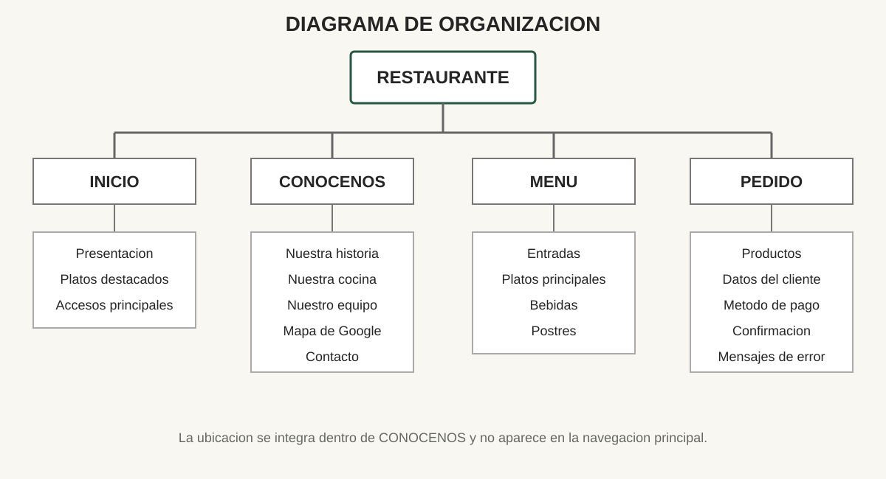
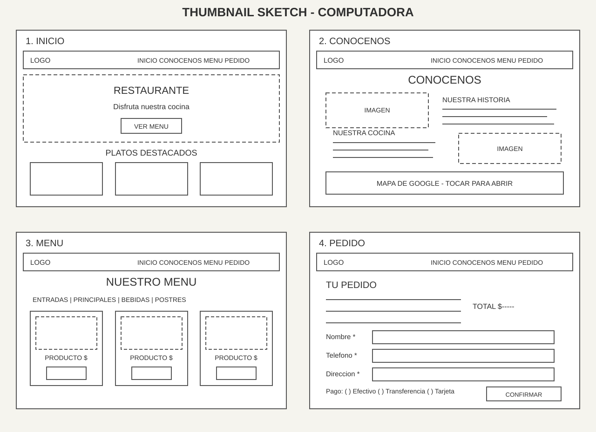
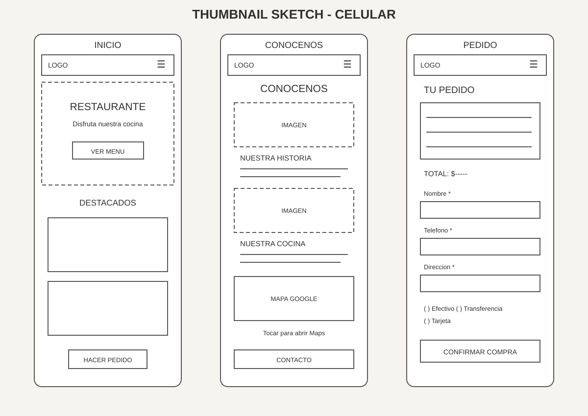
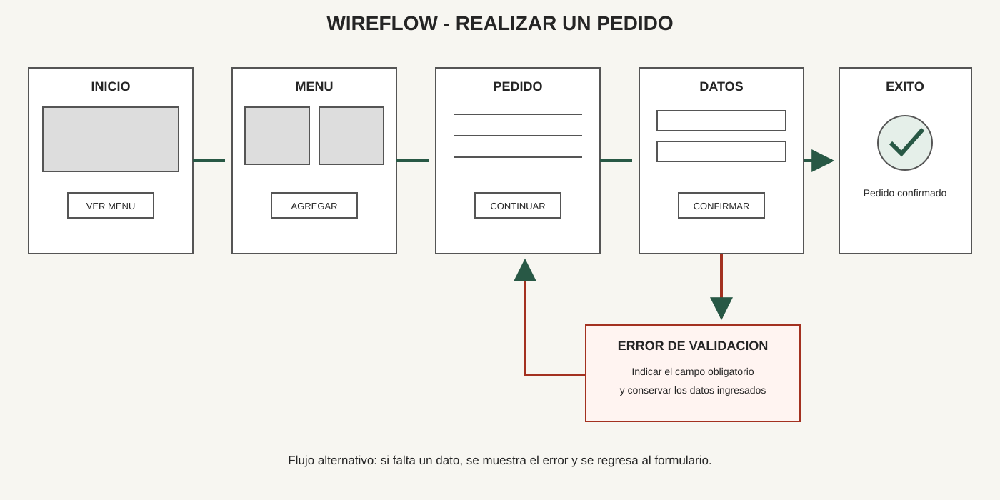
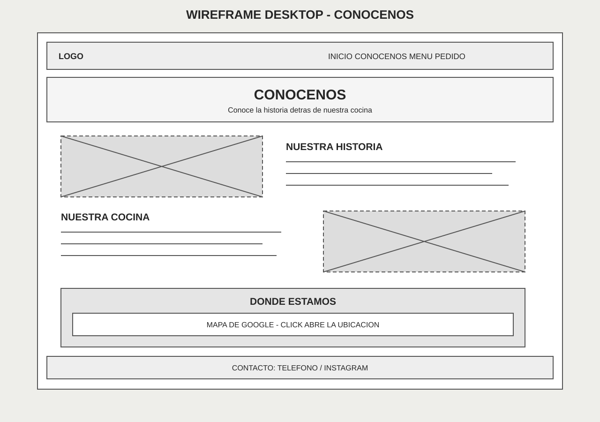
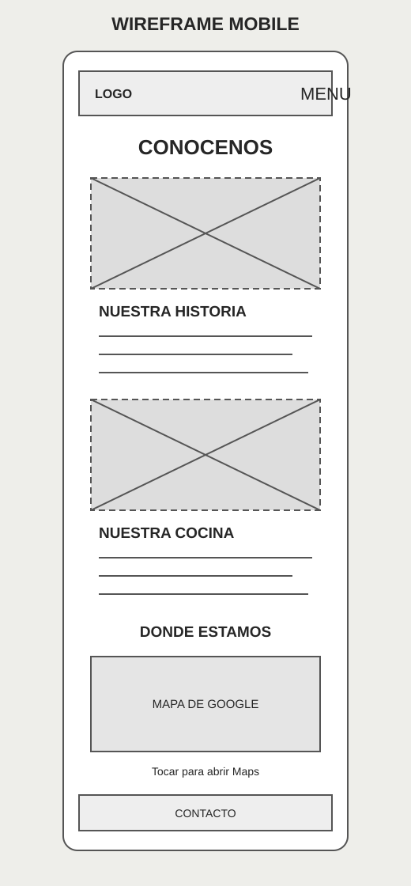

Propuesta inicial, no versión final
Esta práctica conserva un prototipo previo de cuatro páginas y entrega a domicilio. El proyecto final usa cinco páginas y pedidos por mesa. Los SVG de Sketch son bocetos digitales, no dibujos hechos a mano.
Consultar el repositorio grupal y el sitio publicado. Agus se encarga del sketch final.
Diagrama de organizacion
El sitio se organiza alrededor de Inicio, Conocenos, Menu y Pedido. La ubicacion se presenta al final de Conocenos mediante un mapa enlazado, por lo que no ocupa un elemento independiente en la navegacion.

Sketch y Thumbnail Sketch
Bocetos de baja fidelidad que definen jerarquia, opciones, campos y acciones antes de decidir colores o detalles visuales.


Wireflow
El flujo permite explorar el menu, agregar productos, revisar el pedido, completar los datos del cliente y confirmar la compra. Tambien contempla errores de campos obligatorios.

Wireframes
Representan la ubicacion definitiva de contenidos y controles sin definir todavia la identidad visual final.


Prototipo navegable
La version HTML permite recorrer Inicio, Conocenos, Menu y Pedido. El mapa de Conocenos abre Google Maps y el formulario muestra los campos previstos para finalizar una compra.
Abrir prototipo del restaurante